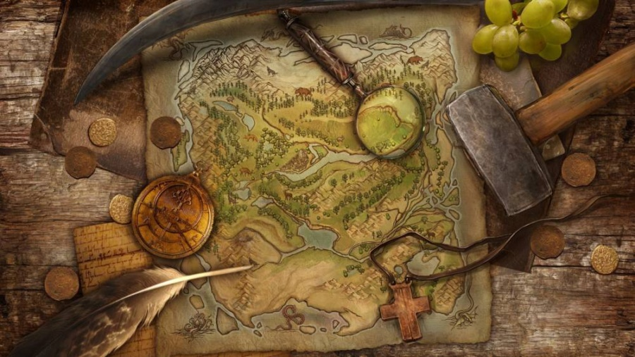

Покопавшись достоменно в підручниках історії України можна знайти безліч цікавих і незвичайних фактів з життя окремих видатних особистостей. Мало хто говорить про те, що Сагайдачний і Хмельницький були одними з найбагатших людей свого часу. Мало хто знає, що сам Шведський король позичав грошей у Івана Мазепи(!). І що якщо повернути зараз гроші гетьмана Павла Полуботка з англійського банку громадянам України, то на кожного жителя припало б ні багато, ні мало, а аж по цілих 38 кг золота!.. Де вони ці легендарні скарби?